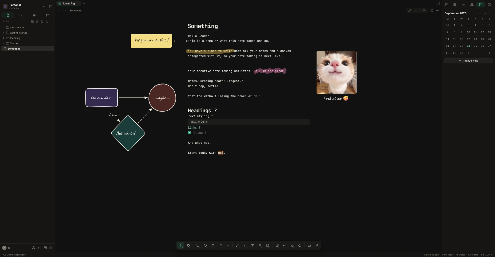
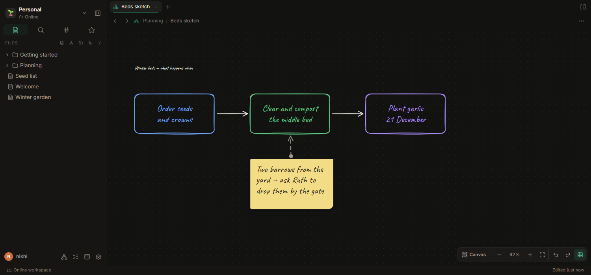
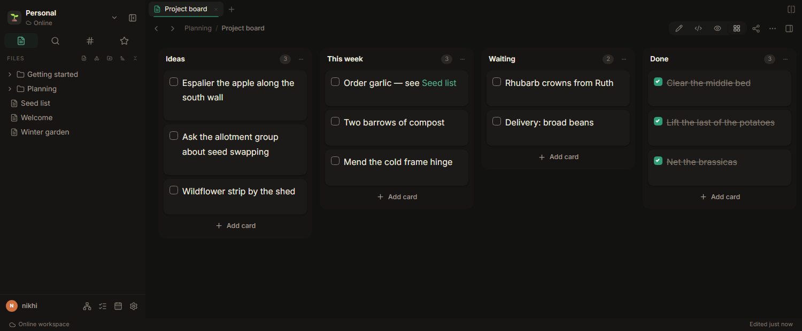
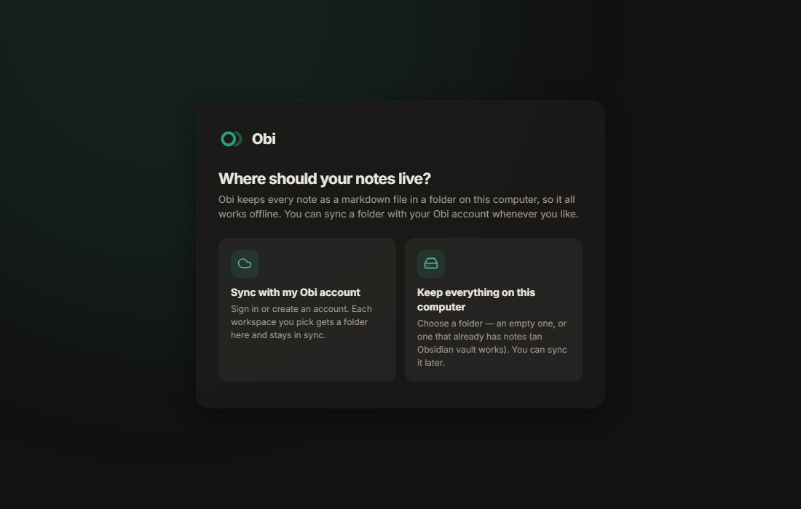

obi
obiPen, shapes, highlights
Sketch in the margin, box a paragraph, highlight a phrase — right next to the text it's about.
self-hosted · works offline · plain files
Your notes are plain .md files. Everything you draw lives beside them — sticky notes, arrows,
sketches — and moves when the text does.

01 canvas
Everything you draw is anchored to a line of text. Add a paragraph above and the sticky note moves down with it; reword a sentence and the arrow still points at it. The markdown file never changes.
Sketch in the margin, box a paragraph, highlight a phrase — right next to the text it's about.
Point from a phrase to a note you left yourself. Edit the sentence and the arrow keeps up.
When a margin isn't enough: boards are files too, on their own or embedded in a note.

02 writing
No preview pane to keep in sync, and nothing proprietary to export your way out of later.
One note, one .md file. Open the same folder in any other editor; nothing is locked in.
They take shape while you write, with the markdown still there the moment you need it.
Wiki links and backlinks, daily notes, every task in one place, and a graph of how it all connects.

A markdown file seen as a board — headings are lists, task lines are cards. Drag one and the file changes.
04 desktop
Every workspace is a folder you choose — a new one, or one that already holds notes. An Obsidian vault works as it is.
windows isn't code-signed yet: if it says it “protected your PC”, choose More info → Run anyway.
macos isn't from the App Store: open it once from System Settings → Privacy & Security → Open Anyway.
linux AppImage: make it executable and run it. The .deb: sudo apt install ./Obi-Setup-*.deb

05 self-host
Your notes sit on your own disk as markdown. The database only remembers who you are and what you shared.
services:
obi:
image: obi
environment:
APP_SECRET: <a long random string>
PUBLIC_URL: https://notes.example.com
volumes:
- obi-data:/data
ports:
- "3000:3000"You can take them all out again whenever you like. They were only ever files.